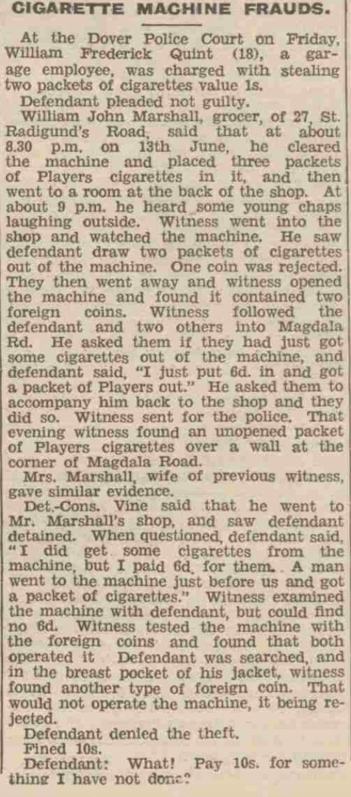
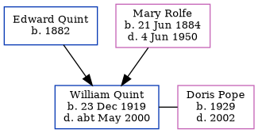

William Frederick Quint 1919 - c2000
[ Home ] | [ Calendar ] | [ Surnames Index ] | [ Family History ]A mechanic & motor drive and the son of Edward Quint (a harbourman) and Mary Rolfe (a domestic general servant), William Quint, the third cousin once-removed on the father's side of <a href="I1.html">Nigel Horne</a>, was born in Dover, Kent, England on Dec 23, 1919<span class="citation">1,2,3,4</span>. He married Doris Pope in Dover around May 1948<span class="citation">5</span>.</p><p>Throughout his life, he lived on 112 Union Road in Dover on Jun 19, 1921<span class="citation">1</span> and on Sep 29, 1939<span class="citation">2</span>. <p>He died <i>c.</i> May 2000 in Dover<span class="citation">4</span>.
Parents
- Edward Seagar was born in 1882
- Mary Jane was born on Jun 21, 1884
Citations
- 1921 Census Of England & Wales - Findmypast (was age 1 and the son of the head of the household)
- 1939 Register - Findmypast (was the son of the head of the household)
- England & Wales births 1837-2006 - Findmypast
- England & Wales deaths 1837-2007 - Findmypast
- England & Wales Marriages 1837-2005 - Findmypast
Media
Dover Express - 1 Jul 1938

England - BMD-M-1948-2-AZ-001147-073
England & Wales births 1837-2006 - BMD/B/1920/1/PZ/000120/046
England & Wales deaths 1837-2007 - BMD/D/2000/5/83904345
1939 Register - TNA/R39/1714/1714B/012/04
1921 Census of England & Wales - GBC/1921/RG15/04547/0289/05
Family Tree
Generated by Ged2Site. Last updated on Jul 20, 2025